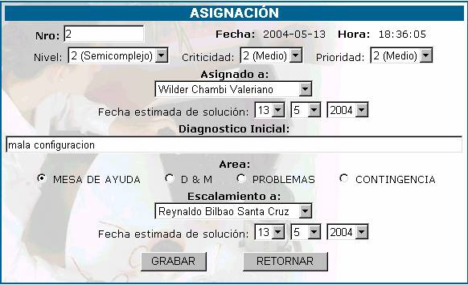
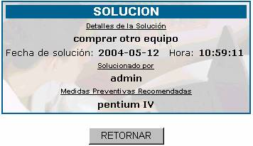

ORDENES DE TRABAJO
Cada usuario que realiza una orden de mesa
de ayuda, ya sea para solucionar un problema, para realizar una consulta o con
otro fin, almacena en la base de datos una descripción completa de su orden de mesa,
se muestra una pantalla con los siguiente campos.
Nro;
Especifica el número de orden de mesa de ayuda recibido, este número es
correlativo, y se marca con un color de acuerdo al estado en el que se
encuentra.
NO ASIGNADOS à Cuando la orden de mesa no ha
sido asignada a un especialista de acuerdo a su nivel, incidencia y prioridad.
NO SOLUCIONADOS à
Cuando la orden de mesa ha sido asignada a un especialista, pero dicha persona
aún no ha registrado una solución.
SOLUCIONADOS à Cuando el especialista ha
registrado la solución a la orden de mesa.
Fecha y Hora; especifica la fecha y hora en la que la orden de
mesa ha ingresado en la mesa de ayuda.
Enviado por; especifica el nombre de la persona que envió la
orden de trabajo.
Tipo; especifica el tipo de usuario que mando la orden de
mesa.
Incidencia; especifica la descripción de la incidencia a la cual
se le tiene que dar solución. Se denomina incidencia, a todas las
consultas de los clientes sin aclarar la naturaleza de las mismas, pudiendo
ser: reclamos, denuncias, dudas operativas, técnicas, de normatividad,
aplicación, obtención de información, desarrollo, etc.
Asignación; especifica el nombre de la persona a la cual se ha
asignado la solución de la orden de mesa, para realizar la descripción de la
asignación haga click sobre el nombre y aparecerá la
siguiente pantalla:

Nro;
número de orden de mesa.
Fecha y Hora; fecha y hora de asignación.
Nivel; dependiendo de la complejidad, el numero de recursos
tecnológicos a utilizar, el grado de especialización y conocimientos que deberá
tener la persona que solucione la orden de mesa se asignará 3. Alta 2. Media 1.
Baja
Criticidad; dependiendo
del nivel de impacto del problema dentro de la institución se asignara el nivel
de criticidad 1. Alta. 2. Medio. 3. Baja.
Prioridad; dependiendo del nivel de prioridad que le asigne el
coordinador de la mesa de ayuda será 1. Alta. 2. Medio. 3. Baja.
Asignado a; despliega un menú de opciones de las personas que
pueden solucionar la orden de mesa.
Fecha estimada de solución; la persona asignada para solucionar la orden de
mesa, en función de la complejidad de la misma, deberá dar una fecha aproximada
de solución.
Diagnóstico Inicial; la
persona encargada de la solución deberá realizar un primer diagnóstico del
problema que deberá ser
registrada en esta pantalla.
Área; dependiendo del área a la cual corresponde el
problema de la orden de trabajo, se tipificará a cuál de las siguientes áreas
pertenece: Mesa de Ayuda, D&M, Problemas,
Contingencia.
Escalamiento a; cuando la persona asignada, por algún motivo no
puede solucionar el problema de la orden de trabajo, entonces realiza un
escalamiento a otra persona.
Fecha estimada de solución; la persona
a la cual se realiza el escalamiento, debe dar una fecha aproximada de la
solución
Segui; en
caso de que la orden de trabajo tenga que ser realizada en fases, en esta
columna se mostrará el seguimiento del trabajo, la fase en la que se presente,
se puede hacer doble click en este campo se mostrara
la siguiente pantalla

:
Estado; se aplicará una calificación del 1 al 5 en función
del cumplimiento o vencimiento de fechas, se aplica la escala siguiente: 1
Cumplida en fecha, 2 Cumplida retrasada, 3. Pendiente en Fecha, 4.Pendiente
retrasada, 5. Desestimada.
Observaciones; se añaden comentarios del especialista y/o de Mesa
de ayuda.
Fecha y Hora; registro de tiempos del seguimiento.
Solu; esta
opción se activará siempre y cuando el responsable asignado haya registrado la
solución de la orden de trabajo. Presione sobre para ver la descripción de la solución.

Conf; es de responsabilidad del administrador validar con
el cliente solicitante de la orden de trabajo su satisfacción con la solución
dada, además de confirmar los registros de tiempo dados por el especialista.
Esta confirmación deberá hacerse en las siguientes 8 horas hábiles de trabajo.
Tiempo y Calidad de Atención; se establece una escala de 1. Malo 2.Bueno 3.
Excelente que deberá ser juzgada por el cliente.
Observaciones del cliente; a la solución recibida, a la atención, a las
recomendaciones.
Costo; Si se hace click sobre la
opción se obtendrá:

Donde se cuenta con los siguientes campos:
Nro.; es
el número de la orden de trabajo que se está analizando.
Descripción; acerca de cuanto se estima que será el costo.
Tiempo de Horas; indicar las horas de trabajo que demanda realizar la
orden de trabajo
Costo por hora; en este campo se debe poner el costo por hora que
demanda realizar la orden de trabajo.
Sub Total;
en este campo se irán realizando las operaciones matemáticas necesarias para
saber cuál es el costo total que se va teniendo.
Imprimir Interno / Imprimir Externo; Al hacer click sobre esta
opción usted obtendrá un reporte detallado desde que la orden de trabajo
ingresa al sistema, su seguimiento y solución correspondientes. La opción
Imprimir Interno imprimirá la hoja para la Institución y la opción Imprimir
Externo, para el Cliente.